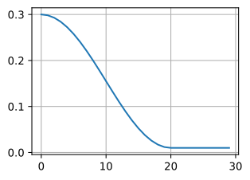

import torch
import torch.nn as nn
from torch.cuda.amp import GradScaler, autocast
import math
# ========== 1. 优化器配置 ==========
model = ... # 你的 Transformer 模型
# AdamW：正确的权重衰减方式
optimizer = torch.optim.AdamW(
model.parameters(),
lr=3e-4, # 峰值学习率
betas=(0.9, 0.95), # LLM 常用设置（β₂ 比默认的 0.999 小）
weight_decay=0.1, # 解耦的权重衰减
eps=1e-8
)
# ========== 2. 学习率调度：线性 warmup + 余弦衰减 ==========
warmup_steps = 2000
total_steps = 300000
min_lr = 3e-5 # 峰值的 10%
def get_lr(step):
"""线性 warmup + 余弦衰减"""
if step < warmup_steps:
# 线性 warmup
return 3e-4 * step / warmup_steps
else:
# 余弦衰减
progress = (step - warmup_steps) / (total_steps - warmup_steps)
return min_lr + 0.5 * (3e-4 - min_lr) * (1 + math.cos(math.pi * progress))
scheduler = torch.optim.lr_scheduler.LambdaLR(
optimizer, lr_lambda=lambda step: get_lr(step) / 3e-4
)
# ========== 3. 混合精度训练（BF16）==========
# BF16 不需要 GradScaler（动态范围与 FP32 相同）
use_bf16 = torch.cuda.is_bf16_supported()
# ========== 4. 训练循环 ==========
max_grad_norm = 1.0 # 梯度裁剪阈值
for step, batch in enumerate(dataloader):
# 前向传播（BF16）
with autocast(dtype=torch.bfloat16 if use_bf16 else torch.float16):
loss = model(batch)
# 反向传播
loss.backward()
# 梯度裁剪
grad_norm = torch.nn.utils.clip_grad_norm_(
model.parameters(), max_grad_norm
)
# 参数更新
optimizer.step()
scheduler.step()
optimizer.zero_grad()
# ========== 5. 训练监控 ==========
if step % 100 == 0:
print(f"Step {step} | Loss: {loss.item():.4f} | "
f"LR: {get_lr(step):.2e} | "
f"Grad Norm: {grad_norm:.4f}")
# 检测异常
if torch.isnan(loss) or torch.isinf(loss):
print(f"⚠️ NaN/Inf detected at step {step}! "
f"Loading last checkpoint...")
# 加载最近的 checkpoint 重启
break第18章：训练稳定性与数值工程
Taming the Chaos: How to Train Billion-Parameter Models Without Blowing Up
NLP
Deep Learning
LLM
训练稳定性
优化器
混合精度
上一章Scaling Laws将大模型训练从炼金术变成了可预测的科学，但隐含了一个关键假设——训练能够正常完成。现实中，PaLM 540B训练出现约20次loss spike需要人工重启，OPT-175B的100页训练日志记录了35次重启和无数次手动干预。本章系统讲述大模型训练稳定性的工程艺术：从Adam到AdamW的权重衰减修正、从FP32到BF16的数值精度演进、从手动warmup到RAdam的自动化——每一步都是对具体痛点的回应。核心论文包括Adam (Kingma & Ba, 2014)、AdamW (Loshchilov & Hutter, 2017)、Mixed Precision Training (Micikevicius et al., 2017)、RAdam (Liu et al., 2019)、Adafactor (Shazeer & Stern, 2018)、Lion (Chen et al., 2023)，以及PaLM和OPT的训练稳定性实战报告。
核心问题：为什么百亿参数的模型训练容易不稳定？如何通过优化器设计、学习率策略、混合精度训练等技术，让大规模训练既快速又稳定？
历史坐标：2014–2023 | Adam (Kingma & Ba, 2014) → AdamW (Loshchilov & Hutter, 2017) → Mixed Precision (Micikevicius et al., 2017) → RAdam (Liu et al., 2019) → Lion (Chen et al., 2023) | 从手工调参到系统化训练工程
Tip本章参考来源
0.1 论文
- Kingma & Ba (2014) “Adam: A Method for Stochastic Optimization” (arXiv:1412.6980) — 参考了 Algorithm 1 (Adam 完整伪代码)、偏差修正的数学推导 (Section 3)；本章优化器演进的起点
- Loshchilov & Hutter (2017/2019) “Decoupled Weight Decay Regularization” (arXiv:1711.05101, ICLR 2019) — 参考了 Algorithm 2 (Adam vs AdamW 对比)、Figure 2 (超参数可分离性热力图)；揭示了 L2 正则化 ≠ 权重衰减的关键洞察
- Micikevicius et al. (2017) “Mixed Precision Training” (arXiv:1710.03740, ICLR 2018) — 参考了 Figure 1 (混合精度训练循环图)、Figure 3 (67% 梯度归零的直方图)；混合精度训练的奠基论文
- Liu et al. (2019) “On the Variance of the Adaptive Learning Rate and Beyond” (arXiv:1908.03265, ICLR 2020) — 参考了 Algorithm 2 (RAdam 伪代码)、Figure 2 (早期梯度分布失真)；对 warmup 必要性的理论解释
- Shazeer & Stern (2018) “Adafactor: Adaptive Learning Rates with Sublinear Memory Cost” (arXiv:1804.04235, ICML 2018) — 参考了 Algorithm 4 (Adafactor 完整伪代码)、分解二阶矩的数学推导
- Chen et al. (2023) “Symbolic Discovery of Optimization Algorithms” (arXiv:2302.06675, NeurIPS 2023) — 参考了 Program 1 (Lion 伪代码)、Figure 1 (精度 vs 计算量对比)；进化搜索发现的优化器
- Dettmers et al. (2021) “8-bit Optimizers via Block-wise Quantization” (arXiv:2110.02861, ICLR 2022) — 参考了 Figure 1 (分块量化示意图)、Figure 2 (动态树量化布局)
- Chowdhery et al. (2022) “PaLM: Scaling Language Modeling with Pathways” (arXiv:2204.02311) — 参考了 Section 5.1 (训练不稳定性)、Figure 8 (loss spike 和重启策略)
- Zhang et al. (2022) “OPT: Open Pre-trained Transformer Language Models” (arXiv:2205.01068) — 参考了 Figure 2 (训练曲线与干预)、OPT-175B 训练日志
- Loshchilov & Hutter (2016) “SGDR: Stochastic Gradient Descent with Warm Restarts” (arXiv:1608.03983, ICLR 2017) — 参考了余弦退火公式和温重启思想
- Yang et al. (2022) “Tensor Programs V: Tuning Large Neural Networks via Zero-Shot Hyperparameter Transfer” (arXiv:2203.03466) — 参考了 Figure 1 (µP 下最优学习率跨宽度稳定)、µTransfer 范式
0.2 教材
- D2L Chapter 12 (Optimization Algorithms) — 参考了 Section 12.6 (Momentum)、Section 12.10 (Adam)、Section 12.11 (Learning Rate Scheduling) 的教学组织方式和 SVG 图解
- D2L Section 5.4 (Numerical Stability and Initialization) — 参考了梯度消失/爆炸的可视化
0.3 课程
- Stanford CS224N Lecture 5-6 (Winter 2025) — 参考了优化和训练的教学框架
- CMU 11-711 ANLP (Fall 2024) — 参考了大规模训练工程的讲解角度
1 从上一章说起
上一章我们见证了 Scaling Laws 的优雅力量：Kaplan 等人发现语言模型的损失与参数量、数据量、计算量之间遵循简洁的幂律关系，Chinchilla 进一步修正了最优资源分配策略。这些发现将大模型训练从”炼金术”变成了”可预测的工程科学”——给定计算预算 \(C\)，你可以精确计算出最优的模型大小 \(N^*\) 和训练数据量 \(D^*\)。
但 Scaling Laws 的所有推导都建立在一个看似理所当然、实则极其脆弱的假设之上：训练能够正常完成。
这个假设有多脆弱？Google 在训练 540B 参数的 PaLM 时，尽管已经启用了梯度裁剪等标准防护措施，训练过程中仍然出现了大约 20 次 loss spike——损失函数突然飙升，有时飙升到训练前期的水平。每次 spike 后，团队不得不回滚到 spike 前约 100 步的 checkpoint，跳过 200–500 个 batch 的数据，然后重新开始训练。更令人困惑的是，他们尝试用引发 spike 的同一批数据从更早的 checkpoint 训练，spike 却不会再次出现——这意味着 loss spike 不是”坏数据”造成的，而是特定数据与特定参数状态的混沌交互。
Meta 训练 OPT-175B 的经历更加戏剧性。他们在 992 块 A100 GPU 上训练了约 33 天，期间经历了 35 次训练重启和超过 100 台机器更换。团队留下了一份长达 100 页的训练日志，详细记录了每一次手动干预：多次降低学习率、在 Adam 和 SGD 之间反复切换、处理 dynamic loss scalar 崩溃到 0 的紧急情况。这份日志后来成为大模型训练领域最透明的公开记录，也让整个社区第一次真切地意识到：大模型训练不是”设好参数，等着收结果”，而是一场需要 24 小时值班的马拉松。

Source: Zeng et al. (2022). “GLM-130B: An Open Bilingual Pre-trained Model”. arXiv:2210.02414
Scaling Laws 告诉你应该训练一个多大的模型，但它没有告诉你怎样才能让训练不崩溃。这就像一位建筑师根据力学公式设计了一座 100 层的摩天大楼，图纸完美无缺，但施工队在第 70 层发现混凝土开裂、钢筋变形——如果施工工艺跟不上设计，再优美的图纸都没有意义。
💡 本章核心洞察：大模型训练的稳定性不是某个单一技巧能解决的，而是优化器设计、学习率策略、数值精度、梯度裁剪四个维度的精密协调。从 Adam 到 AdamW 的权重衰减修正、从 FP32 到 BF16 的精度演进、从手动 warmup 到 RAdam 的自动化——每一步改进都是对一个具体工程痛点的回应。
2 问题的本质是什么？
2.1 为什么大模型比小模型更难训练？
表面上看，大模型和小模型用的是同一套优化算法，同样是随机梯度下降的变体。一个 BERT-base（1.1 亿参数）可以在几块 GPU 上稳定训练几天，为什么换成 PaLM-540B（5400 亿参数）就会出现各种不稳定？这个问题的答案涉及多个相互交织的因素。
第一个因素是损失函数的地形。随着参数量的增加，损失函数的景观（loss landscape）变得更加崎岖。高维空间中的鞍点远比局部极小值更常见，而不同方向上的曲率差异（条件数）可以相差几个数量级。这意味着某些参数方向上需要大步前进，而另一些方向上哪怕走一小步就会”翻山越岭”。任何单一的学习率都无法同时满足所有方向的需求。
第二个因素是数值精度的放大效应。在 FP32 精度下，每个参数的更新都有大约 \(10^{-7}\) 的相对误差。对于一个 1 亿参数的模型，这些微小误差可能互相抵消；但对于一个 5000 亿参数的模型，误差的累积效应完全不同。更关键的是，为了在有限的 GPU 显存中装下如此多的参数，大模型几乎必须使用半精度（FP16 或 BF16）训练，而半精度的数值范围和精度都远不如 FP32——这就好像用一把刻度更粗糙的尺子去测量一个需要更高精度的对象。
第三个因素是训练时间的累积风险。大模型的训练通常需要数周甚至数月。假设每一步训练有 99.99% 的概率是”正常的”——这听起来相当安全。但如果你需要训练 100 万步，那么至少出现一次异常的概率是 \(1 - 0.9999^{1000000} \approx 1 - e^{-100} \approx 1\)，几乎是确定性事件。训练时间越长，罕见的不稳定事件就越有可能发生。
2.2 稳定性与速度的根本矛盾
训练大模型面临一个根本性的权衡：稳定性和速度往往是矛盾的。
保守的训练设置——小学习率、FP32 精度、频繁的梯度裁剪——可以让训练非常稳定，但代价是速度极慢。一个原本需要 30 天的训练可能变成 90 天，这不仅意味着 3 倍的 GPU 费用，还意味着 3 倍的碳排放和 3 倍的研发周期。在竞争激烈的 AI 领域，训练速度本身就是竞争力的一部分。
激进的训练设置——大学习率、FP16 精度、最少的防护措施——可以让训练飞速推进，但随时可能崩溃。一次 loss spike 可能浪费几天的计算；如果 spike 发生在训练后期且没有可用的 checkpoint，可能意味着整个训练从头再来——这是数百万美元的代价。
我们需要的不是”安全第一”或”速度第一”，而是一套在保持高速的同时最大化稳定性的技术栈。这个技术栈需要在四个维度上同时发力：
- 优化器：如何计算参数更新的方向和步长？
- 学习率策略：如何在训练过程中动态调整更新的激进程度？
- 数值精度：如何在降低精度（省内存、提速度）的同时保持数值稳定？
- 异常处理：如何检测和恢复训练中的异常事件？
接下来的几节，我们将逐一深入这四个维度。
3 核心思想与直觉
3.1 优化器：从”全局统一”到”各参数自治”
训练神经网络的本质是求解一个高维优化问题：找到参数 \(\boldsymbol{\theta}\) 使得损失函数 \(\mathcal{L}(\boldsymbol{\theta})\) 最小。最朴素的方法是梯度下降——沿着损失函数下降最快的方向更新参数。但原始梯度下降有一个根本性的缺陷：它用同一个学习率更新所有参数。
这为什么是个问题？想象你在一个椭圆形的山谷中——沿着山谷的长轴方向，坡度很缓，需要大步前进；沿着短轴方向，坡度很陡，稍微走远就会”翻到对面去”。如果学习率适合长轴方向，短轴方向就会来回震荡；如果学习率适合短轴方向，长轴方向就会前进得极其缓慢。这就是所谓的病态条件（ill-conditioning）问题。
优化器的演进历史，本质上就是不断寻找更好的方式来为每个参数”量身定制”合适的更新步长：
动量（Momentum）是第一个重要改进。它的思想很直觉：不要只看当前这一步的梯度方向，而是记住过去几步的方向，像一个重球滚下山坡一样积累惯性。这样可以在一致的方向上加速，在震荡的方向上互相抵消。
Adam 则更进一步——它不仅记住了梯度的方向（一阶矩），还记住了梯度的幅度（二阶矩）。对于那些梯度一直很大的参数，Adam 会自动减小它们的步长；对于那些梯度一直很小的参数，Adam 会自动增大它们的步长。这就实现了每个参数有自己的自适应学习率。在 Transformer 中，不同层、不同类型的参数（attention 权重 vs FFN 权重 vs 嵌入向量）的梯度尺度可以相差好几个数量级，这使得 Adam 的自适应特性尤为重要。
AdamW 修正了一个微妙但重要的 bug——Adam 中的 L2 正则化与权重衰减并不等价（后文会详细解释）。
Lion 则走了一条截然不同的路：它用进化搜索从数学程序空间中自动发现了一个新优化器，只使用梯度和动量的符号（sign）作为更新方向，产生均匀幅度的更新——更简单、更省内存，而且在大 batch 训练时表现更好。
3.2 学习率：训练的”油门控制”
如果说优化器决定了”往哪个方向走、走多大步”，那么学习率调度（learning rate schedule）就是训练过程中的”油门控制”——它决定了整体更新的激进程度如何随时间变化。
现代大模型训练几乎无一例外地采用同一种学习率策略：先 warmup，再衰减。这背后的直觉是什么？
训练刚开始时，模型的参数是随机初始化的，损失函数的景观对于优化器来说是完全陌生的。Adam 的自适应学习率依赖于梯度的二阶矩估计，而在最初的几十步里，这些估计是基于极少量样本的——方差极大，完全不可靠。如果此时就用大学习率更新，就像蒙着眼睛在悬崖边全速奔跑。Warmup 的作用就是让优化器有时间”熟悉地形”：在最初的几百到几千步里，学习率从接近 0 缓慢上升到峰值，给二阶矩估计留出足够的样本来稳定下来。
到了训练中期，优化器已经对损失函数的地形有了可靠的估计，此时应该用最大的学习率进行”高速探索”——快速穿越损失函数的平坦区域，寻找更好的局部最优。
到了训练后期，模型已经接近最优解的邻域，继续用大学习率会导致在最优点附近来回震荡。此时应该逐渐降低学习率，让模型”精确着陆”。余弦退火（cosine annealing）提供了一种从探索到收敛的平滑过渡——它在中期保持相对较高的学习率，在末期快速衰减，形态恰好符合这种需求。
3.3 数值精度：用更”粗糙”的数字换取速度
训练的第三个维度是数值精度。标准的 32 位浮点数（FP32）有 23 位尾数和 8 位指数，提供约 7 位有效数字和 \(\pm 3.4 \times 10^{38}\) 的动态范围。但 FP32 的缺点是显而易见的——每个参数占 4 字节，一个 70B 参数的模型仅参数就需要 280GB 显存，再加上优化器状态、激活值和梯度，单张 GPU 根本装不下。
混合精度训练的核心思想是：前向传播和反向传播用半精度（16 位），只在参数更新时回到 FP32。这样不仅内存减半，还能利用 GPU 上专门为半精度设计的 Tensor Core 来加速计算——在 A100 GPU 上，FP16 的吞吐量是 FP32 的 2–8 倍。
但半精度有一个致命的陷阱：动态范围太窄。FP16 的最小正数约为 \(6 \times 10^{-8}\)，最大值约为 \(6.5 \times 10^{4}\)。而梯度的值经常小于 \(10^{-8}\)——这些值在 FP16 中会被直接截断为 0，造成”梯度下溢”（gradient underflow）。Micikevicius 等人的实验发现，在不做任何处理的情况下，FP16 训练中高达 67% 的梯度会变成零。
Google 提出的 BF16（Brain Floating-Point 16）用一种巧妙的方式解决了这个问题：它牺牲了精度（只有 7 位尾数，比 FP16 的 10 位少），换取了与 FP32 完全相同的动态范围（8 位指数）。这意味着 BF16 几乎不会发生梯度下溢，而且不需要 loss scaling 这种额外的工程技巧。精度的损失在实践中影响很小——训练最终收敛到的损失值几乎与 FP32 一致。这就是为什么 BF16 成为了 LLM 训练的事实标准。
4 技术细节
4.1 优化器的演进
4.1.1 Adam：自适应学习率的胜利
Adam 是目前 Transformer 训练中使用最广泛的优化器。它的名字来自”Adaptive Moment Estimation”，因为它同时估计梯度的一阶矩（均值，即动量）和二阶矩（未中心化方差）。
NoteAlgorithm 1: Adam (Kingma & Ba, 2014)
输入: 学习率 α (default: 0.001)
衰减率 β₁ = 0.9, β₂ = 0.999
数值稳定常数 ε = 1e-8
损失函数 f(θ)
初始化: θ₀, m₀ = 0, v₀ = 0, t = 0
while θ 未收敛:
t ← t + 1
g_t ← ∇_θ f_t(θ_{t-1}) # 计算梯度
m_t ← β₁ · m_{t-1} + (1-β₁) · g_t # 更新一阶矩（动量）
v_t ← β₂ · v_{t-1} + (1-β₂) · g_t² # 更新二阶矩（自适应项）
m̂_t ← m_t / (1 - β₁ᵗ) # 偏差修正一阶矩
v̂_t ← v_t / (1 - β₂ᵗ) # 偏差修正二阶矩
θ_t ← θ_{t-1} - α · m̂_t / (√v̂_t + ε) # 参数更新
return θ_tSource: Kingma, D. P. & Ba, J. (2014). “Adam: A Method for Stochastic Optimization”. arXiv:1412.6980, Algorithm 1
Adam 中有一个容易被忽略但至关重要的设计：偏差修正（bias correction）。因为 \(m_0 = 0\) 和 \(v_0 = 0\)，在训练初期，指数加权平均严重偏向 0。以一阶矩为例，如果梯度的真实期望是 \(\mathbb{E}[g]\)，那么：
\[ \mathbb{E}[m_t] = (1 - \beta_1^t) \cdot \mathbb{E}[g] \]
当 \(t\) 很小时，\(\beta_1^t\) 接近 1，\(m_t\) 严重低估了真实的梯度期望。除以 \((1 - \beta_1^t)\) 就精确地修正了这个偏差。二阶矩的偏差修正尤其关键——\(\beta_2 = 0.999\) 意味着偏差需要上千步才能自然消退，而如果不修正，早期的参数更新会因为 \(v_t\) 被低估而变得异常大。
4.1.2 完整数值示例：Adam 的前 3 步更新
为了建立直觉，让我们用一个具体的数值例子走完 Adam 的前 3 步。假设我们只有一个标量参数 \(\theta\)，使用默认超参数 \(\alpha = 0.001\)，\(\beta_1 = 0.9\)，\(\beta_2 = 0.999\)，\(\varepsilon = 10^{-8}\)。
初始状态：\(\theta_0 = 0.5\)，\(m_0 = 0\)，\(v_0 = 0\)
假设前 3 步的梯度分别为 \(g_1 = 0.1\)，\(g_2 = 0.2\)，\(g_3 = 0.15\)。
Step 1 (\(t=1\), \(g_1 = 0.1\))：
\[ \begin{aligned} m_1 &= 0.9 \times 0 + 0.1 \times 0.1 = 0.01 \\ v_1 &= 0.999 \times 0 + 0.001 \times 0.01 = 0.00001 \\ \hat{m}_1 &= \frac{0.01}{1 - 0.9^1} = \frac{0.01}{0.1} = 0.1 \\ \hat{v}_1 &= \frac{0.00001}{1 - 0.999^1} = \frac{0.00001}{0.001} = 0.01 \\ \theta_1 &= 0.5 - 0.001 \times \frac{0.1}{\sqrt{0.01} + 10^{-8}} = 0.5 - 0.001 \times \frac{0.1}{0.1} = 0.499 \end{aligned} \]
注意偏差修正的效果：未修正的 \(m_1 = 0.01\)，修正后 \(\hat{m}_1 = 0.1\)——放大了 10 倍！未修正的 \(v_1 = 0.00001\)，修正后 \(\hat{v}_1 = 0.01\)——放大了 1000 倍！而最终更新量 \(\hat{m}_1 / \sqrt{\hat{v}_1} = 0.1 / 0.1 = 1.0\)，实际步长为 \(\alpha \times 1.0 = 0.001\)，恰好等于学习率本身。这是 Adam 的一个有趣性质：在训练初期，每个参数的实际更新幅度近似等于学习率 \(\alpha\)，与梯度的绝对值几乎无关。
Step 2 (\(t=2\), \(g_2 = 0.2\))：
\[ \begin{aligned} m_2 &= 0.9 \times 0.01 + 0.1 \times 0.2 = 0.029 \\ v_2 &= 0.999 \times 0.00001 + 0.001 \times 0.04 = 0.0000499 \\ \hat{m}_2 &= \frac{0.029}{1 - 0.81} = \frac{0.029}{0.19} \approx 0.1526 \\ \hat{v}_2 &= \frac{0.0000499}{1 - 0.998} = \frac{0.0000499}{0.002} \approx 0.02495 \\ \theta_2 &\approx 0.499 - 0.001 \times \frac{0.1526}{\sqrt{0.02495}} \approx 0.499 - 0.001 \times 0.966 \approx 0.49803 \end{aligned} \]
Step 3 (\(t=3\), \(g_3 = 0.15\))：
\[ \begin{aligned} m_3 &= 0.9 \times 0.029 + 0.1 \times 0.15 = 0.0411 \\ v_3 &= 0.999 \times 0.0000499 + 0.001 \times 0.0225 \approx 0.0000722 \\ \hat{m}_3 &= \frac{0.0411}{1 - 0.729} = \frac{0.0411}{0.271} \approx 0.1517 \\ \hat{v}_3 &= \frac{0.0000722}{1 - 0.997} = \frac{0.0000722}{0.003} \approx 0.02407 \\ \theta_3 &\approx 0.49803 - 0.001 \times \frac{0.1517}{\sqrt{0.02407}} \approx 0.49803 - 0.001 \times 0.978 \approx 0.49705 \end{aligned} \]
从这个例子可以观察到几个关键现象。首先，实际更新幅度（约 0.001）始终接近学习率 \(\alpha\)，这就是 Adam “自适应”的含义：无论梯度是 0.1 还是 0.2，Adam 都会自动调整为大约相同量级的更新步长。其次，偏差修正在前几步的影响非常显著——如果去掉偏差修正，\(v_1\) 会被严重低估，导致更新幅度暴增。
4.1.3 AdamW：修正权重衰减的 bug
Adam 的普及也暴露了一个微妙的问题。在传统的 SGD 中，L2 正则化和权重衰减是数学等价的：
\[ \text{L2 正则化: } \theta_{t+1} = \theta_t - \eta \left(\nabla f(\theta_t) + \lambda \theta_t\right) = (1 - \eta\lambda)\theta_t - \eta \nabla f(\theta_t) \]
\[ \text{权重衰减: } \theta_{t+1} = (1 - \lambda')\theta_t - \eta \nabla f(\theta_t) \]
令 \(\lambda' = \eta\lambda\)，两者完全一样。但是在 Adam 中，这种等价性被打破了。
在 Adam + L2 正则化中，正则化项 \(\lambda\theta_t\) 被加到梯度里，一起经过了自适应缩放：
\[ \text{Adam + L2: } \quad g_t = \nabla f(\theta_t) + \lambda\theta_t, \quad \theta_{t+1} = \theta_t - \alpha \cdot \frac{\hat{m}_t}{\sqrt{\hat{v}_t} + \varepsilon} \]
问题在于：正则化梯度 \(\lambda\theta_t\) 被 \(1/\sqrt{\hat{v}_t}\) 缩放了。对于那些历史梯度很大的参数（\(\hat{v}_t\) 大），正则化的效果被削弱了；对于那些历史梯度很小的参数，正则化反而被放大了。这完全不是我们想要的——权重衰减的初衷是对所有参数施加统一的缩小压力，与它们的梯度历史无关。
AdamW 的修正很简单但意义重大：将权重衰减从梯度中解耦出来，直接作用于参数本身：
\[ \text{AdamW: } \quad \theta_{t+1} = (1 - \lambda)\theta_t - \alpha \cdot \frac{\hat{m}_t}{\sqrt{\hat{v}_t} + \varepsilon} \]
NoteAlgorithm 2: AdamW — 关键差异 (Loshchilov & Hutter, 2017)
# Adam + L2（错误的方式）:
g_t ← ∇f(θ) + λ·θ # 正则化进入梯度
m_t, v_t ← 更新矩估计(g_t) # 正则化被自适应缩放扭曲
θ ← θ - α · m̂_t / (√v̂_t + ε) # 正则化效果依赖于梯度历史
# AdamW（正确的方式）:
g_t ← ∇f(θ) # 梯度不含正则化项
m_t, v_t ← 更新矩估计(g_t) # 自适应缩放只作用于真实梯度
θ ← (1 - λ)·θ - α · m̂_t / (√v̂_t + ε) # 权重衰减独立于梯度Source: Loshchilov, I. & Hutter, F. (2017). “Decoupled Weight Decay Regularization”. arXiv:1711.05101, Algorithm 2
Loshchilov 和 Hutter 的实验还揭示了一个重要的工程洞察：在 AdamW 中，最优学习率和最优权重衰减是可分离的——你可以独立调节它们，最优区域在超参数空间中形成一个矩形。而在 Adam + L2 中，两者是耦合的，最优区域是对角线形状，调一个就必须同时调另一个。这使得 AdamW 的超参数搜索效率大大提高。

Source: Loshchilov, I. & Hutter, F. (2017). “Decoupled Weight Decay Regularization”. arXiv:1711.05101, Figure 2
4.1.4 Adafactor：当显存是瓶颈
Adam 的优势伴随着一个沉重的代价：它需要为每个参数维护两个状态变量（\(m\) 和 \(v\)），这意味着优化器状态的显存是模型参数的 2 倍。对于一个 70B 参数的模型（FP32 存储需 280GB），Adam 的优化器状态额外需要 560GB——这在任何单张 GPU 上都是不可能的。
Shazeer 和 Stern 提出的 Adafactor 用一个巧妙的线性代数技巧大幅削减了这个开销。对于一个 \(n \times m\) 的权重矩阵，Adam 需要存储完整的 \(n \times m\) 二阶矩矩阵 \(V\)。Adafactor 观察到：与其存储完整的 \(V\)，不如只存储它的行和（\(n\) 个值）和列和（\(m\) 个值），然后通过外积重构完整矩阵：
\[ \hat{V}_t = \frac{R_t \cdot C_t^{\top}}{\mathbf{1}_n^{\top} R_t} \]
其中 \(R_t \in \mathbb{R}^n\) 是行和向量，\(C_t \in \mathbb{R}^m\) 是列和向量。这将二阶矩的存储从 \(O(nm)\) 降低到 \(O(n + m)\)。对于一个 \(4096 \times 4096\) 的权重矩阵，存储量从 1600 万个值降低到 8192 个值——压缩了近 2000 倍。
Adafactor 还做出了几个额外的设计选择：去掉了一阶矩（momentum），改用更新裁剪（update clipping）来替代；使用相对步长（relative step size）而非绝对学习率；使用随时间衰减的 \(\beta_2\)。这些选择的共同效果是：Adafactor 的优化器状态几乎不需要额外显存，同时在 Transformer 翻译任务上的表现与 Adam 相当。T5 的训练就使用了 Adafactor。
4.1.5 Lion：进化搜索发现的优化器
2023 年，Google Brain 的 Chen 等人用一种完全不同的方法发现了新的优化器：他们定义了一个”数学程序”的搜索空间，用进化算法在这个空间中搜索最优的优化器——就像 NAS（Neural Architecture Search）搜索最优架构一样，但搜索对象换成了优化器的更新规则。
搜索发现的优化器被命名为 Lion（EvoLved Sign Momentum），它的更新规则出人意料地简单：
NoteProgram 1: Lion (Chen et al., 2023)
输入: 学习率 η, 权重衰减 λ, 衰减率 β₁ = 0.9, β₂ = 0.99
while θ 未收敛:
g_t ← ∇_θ f_t(θ_{t-1})
# 计算更新方向（只取符号！）
update ← sign(β₁ · m_{t-1} + (1-β₁) · g_t)
# 应用权重衰减和更新
θ_t ← (1 - η·λ) · θ_{t-1} - η · update
# 更新动量（注意：用不同的 β₂）
m_t ← β₂ · m_{t-1} + (1-β₂) · g_t
return θ_tSource: Chen, X. et al. (2023). “Symbolic Discovery of Optimization Algorithms”. arXiv:2302.06675, Program 1
Lion 与 Adam 的核心区别在于 sign() 操作——它将更新方向量化为 \(\{-1, 0, +1\}\)，产生均匀幅度的更新。这有几个深远的影响：
第一，Lion 只需要存储一个状态变量（动量 \(m\)），比 Adam 省一半的优化器显存。第二，因为 sign() 的输出范数远大于 Adam 的自适应更新，Lion 需要更小的学习率（通常是 Adam 的 3-10 倍小）和更大的权重衰减来补偿。第三，sign() 操作对梯度的绝对值不敏感，这使得 Lion 在大 batch 训练时特别有优势——当 batch size 增大时，梯度的方差减小但方向变得更可靠，而 Lion 恰好只利用方向信息。

Source: Chen, X. et al. (2023). “Symbolic Discovery of Optimization Algorithms”. arXiv:2302.06675, Figure 1
4.1.6 8-bit Adam：量化优化器状态
Dettmers 等人提出了另一种减少优化器显存的思路：既然 Adam 的状态变量不需要完全精确，为什么不直接把它们从 32 位量化到 8 位呢？
核心技术是分块量化（block-wise quantization）：将每个状态张量切分成 2048 个元素一组的小块，每个块有自己独立的归一化常数（绝对最大值）。在每个块内部，值被归一化到 [-1, 1] 范围后再量化。这种分块设计有两个好处：异常大的值（outlier）只会影响它所在的块，不会”传染”到整个张量；而且每个块的量化和反量化可以在 GPU 上并行执行。
配合一种称为”动态树量化”的非线性量化方案（在不同幅度范围内自适应地分配量化精度），8-bit Adam 将优化器状态的显存压缩到约原来的四分之一，同时在训练效果上与 32-bit Adam 几乎完全一致。这一方法已经通过 bitsandbytes 库被广泛使用。
4.1.7 优化器对比总结
| 优化器 | 状态变量 | 每参数显存 | 核心特点 | 适用场景 |
|---|---|---|---|---|
| SGD + Momentum | \(m\) | 1× | 最简单，通用基线 | 小模型、CV任务 |
| Adam | \(m, v\) | 2× | 自适应学习率 | 通用，Transformer标配 |
| AdamW | \(m, v\) | 2× | 正确的权重衰减 | Adam的严格上位替代 |
| Adafactor | \(R, C\)（分解） | ≈ 0× | 亚线性显存 | 超大模型（T5） |
| Lion | \(m\) | 1× | 符号更新，进化搜索发现 | 大batch，视觉/扩散模型 |
| 8-bit Adam | \(m, v\)（量化） | ≈ 0.5× | 量化优化器状态 | 显存受限场景 |
4.2 学习率策略
4.2.1 Warmup 的必要性：理论解释
学习率 warmup 是大模型训练中最广泛使用的技巧之一，但长期以来它被视为一种”经验性的 hack”——大家都知道没有 warmup 训练会崩溃，却说不清楚为什么。Liu 等人（2019）的 RAdam 论文首次为 warmup 提供了严谨的理论解释。
核心分析如下：Adam 的自适应学习率是 \(\alpha_t = \alpha / \sqrt{\hat{v}_t}\)，其中 \(\hat{v}_t\) 是二阶矩的偏差修正估计。问题在于，\(\hat{v}_t\) 本身是一个随机变量——它是基于有限样本的估计。刘等人证明，\(\hat{v}_t\) 的方差近似为：
\[ \text{Var}\left[\frac{1}{\hat{v}_t}\right] \approx \frac{1}{\rho_t} \cdot \text{常数} \]
其中 \(\rho_t\) 是”简单移动平均长度”（SMA length），表示二阶矩估计中有效参与的样本数量：
\[ \rho_t = \rho_\infty - \frac{2t \cdot \beta_2^t}{1 - \beta_2^t}, \quad \rho_\infty = \frac{2}{1 - \beta_2} - 1 \]
在训练初期（\(t\) 很小），\(\rho_t\) 很小，这意味着自适应学习率 \(1/\sqrt{\hat{v}_t}\) 的方差极大——它可能在一步之间从 10 跳到 0.1，让参数更新变得完全不可预测。Warmup 的作用正是在这个高方差阶段使用小学习率来”兜底”。
RAdam 将这个分析自动化了——它计算一个方差修正系数 \(r_t\)，在 \(\rho_t\) 足够大时使用完整的 Adam 更新，在 \(\rho_t\) 过小时退化为普通 SGD。但 RAdam 的隐式 warmup 只有约 40 步（对于 \(\beta_2 = 0.999\)），对于需要数千步 warmup 的 LLM 训练来说远远不够——这说明 LLM 的 warmup 需求不仅来自 Adam 的方差问题，还有更深层的原因（如损失函数景观的条件数在早期极差）。
4.2.2 余弦退火：从探索到收敛的平滑过渡
确定了 warmup 的必要性后，接下来的问题是：warmup 之后学习率如何衰减？
余弦退火（cosine annealing）的公式是：
\[ \eta(t) = \eta_{\min} + \frac{1}{2}(\eta_{\max} - \eta_{\min})\left(1 + \cos\left(\frac{t}{T} \cdot \pi\right)\right) \]
其中 \(\eta_{\max}\) 是峰值学习率，\(\eta_{\min}\) 是最终学习率（通常为峰值的 10%），\(T\) 是总训练步数。这个公式的形状恰好符合训练的需求：前半段学习率下降缓慢（保持高速探索），后半段学习率快速衰减（精确收敛）。
现代大模型训练的标准学习率配方因此是：
\[ \eta(t) = \begin{cases} \eta_{\max} \cdot \frac{t}{T_{\text{warmup}}} & \text{if } t \leq T_{\text{warmup}} \quad \text{(线性 warmup)} \\ \eta_{\min} + \frac{1}{2}(\eta_{\max} - \eta_{\min})\left(1 + \cos\left(\frac{t - T_{\text{warmup}}}{T - T_{\text{warmup}}} \cdot \pi\right)\right) & \text{if } t > T_{\text{warmup}} \quad \text{(余弦衰减)} \end{cases} \]
GPT-2、GPT-3、LLaMA、PaLM、Chinchilla 几乎无一例外地使用这种”线性 warmup + 余弦衰减”的组合。Chinchilla 的实验还发现，调度的具体形状（余弦 vs 线性衰减）并不是特别关键——真正重要的是有 warmup 和最终衰减到接近 0 这两个要素。
一个值得注意的实际问题是：余弦退火要求预先知道总训练步数\(T\)。这在大多数训练中不是问题（你计划训练多久就设多少），但在需要灵活延长训练的场景下就很不方便。为此，最近出现了一种替代方案——Warmup-Stable-Decay (WSD) 策略：warmup 后学习率保持在峰值不变（stable 阶段），只在最后的一小段”冷却”（cooldown）阶段快速衰减。这允许在 stable 阶段的任何时刻做出”停止还是继续训练”的决定。

Source: D2L, Section 12.11 (Learning Rate Scheduling). d2l.ai
4.3 混合精度训练
4.3.1 FP16、BF16 与 FP32 的位布局
理解混合精度训练，首先需要理解三种浮点格式的本质区别。一个浮点数由三部分组成：符号位（sign）、指数位（exponent）和尾数位（mantissa/fraction）。
\[ \text{value} = (-1)^{\text{sign}} \times 2^{\text{exponent} - \text{bias}} \times (1 + \text{fraction}) \]
| 格式 | 总位数 | 符号 | 指数 | 尾数 | 动态范围 | 精度（有效数字） |
|---|---|---|---|---|---|---|
| FP32 | 32 | 1 | 8 | 23 | \(\pm 3.4 \times 10^{38}\) | ~7 位 |
| FP16 | 16 | 1 | 5 | 10 | \(\pm 6.5 \times 10^{4}\) | ~3 位 |
| BF16 | 16 | 1 | 8 | 7 | \(\pm 3.4 \times 10^{38}\) | ~2 位 |
BF16 的设计哲学一目了然：它与 FP32 共享相同的 8 位指数，因此动态范围完全一致；代价是尾数只有 7 位（FP16 有 10 位），精度较低。对于深度学习训练来说，动态范围远比精度更重要——梯度的幅度可以跨越几十个数量级，但每个梯度值本身不需要高精度。
4.3.2 数值示例：梯度下溢问题
假设某个参数的梯度为 \(g = 1.2 \times 10^{-6}\)。在三种格式下：
- FP32：可以精确表示（最小正数 \(\approx 1.2 \times 10^{-38}\)）
- BF16：可以表示（最小正数 \(\approx 1.2 \times 10^{-38}\)，与 FP32 相同）
- FP16：可以表示，但精度只有 3 位有效数字
现在假设梯度更小，\(g = 3.5 \times 10^{-8}\)：
- FP32：正常表示
- BF16：正常表示
- FP16：\(\approx 5.96 \times 10^{-8}\) 是 FP16 的最小正次正规数，\(3.5 \times 10^{-8}\) 勉强可表示但精度极差
再小一点，\(g = 1.0 \times 10^{-9}\)：
- FP32 / BF16：正常表示
- FP16：下溢为 0！这个梯度被完全丢弃了。
Micikevicius 等人的实验显示，在 SSD（物体检测模型）的训练中，不做任何处理的 FP16 训练会让 67% 的激活梯度变成零。这解释了为什么 FP16 混合精度训练需要 loss scaling。
4.3.3 混合精度训练的三大技术
混合精度训练并不是简单地”把所有数字换成 16 位”，而是一套精心设计的三重技术组合：
技术一：FP32 主权重（Master Weights）。参数的”权威版本”始终保存在 FP32 中。每次前向传播前将它们转换为 FP16/BF16 用于计算，反向传播结束后将 FP32 格式的梯度应用于 FP32 主权重。这保证了参数更新的累积精度不会受半精度的损害。
技术二：损失缩放（Loss Scaling，仅 FP16 需要）。在反向传播之前，将损失乘以一个大常数 \(S\)（如 1024 或 65536）。由于反向传播是线性的，所有梯度也会被放大 \(S\) 倍，将那些原本会下溢为 0 的小梯度”提升”到 FP16 可表示的范围。优化器更新前再将梯度除以 \(S\) 恢复原始尺度。\(S\) 可以是固定值，也可以动态调整——从大值开始，遇到数值溢出就减半，一段时间没有溢出就翻倍。
技术三：FP32 累加（Accumulation）。某些运算（如矩阵乘法中的累加、BatchNorm/LayerNorm 中的均值和方差计算）对精度特别敏感。这些运算的中间结果用 FP32 累加，最终结果再转回 FP16/BF16。现代 GPU 的 Tensor Core 原生支持”FP16 输入、FP32 累加”的模式。
BF16 的出现大大简化了这个流程——由于 BF16 的动态范围与 FP32 相同，loss scaling 通常不再需要。这是 BF16 成为 LLM 训练标准的最重要原因之一：更少的工程复杂性，更少的潜在 bug。

float2half 将 FP32 主权重转换为 FP16 用于下一次前向传播。这种设计在保持训练精度的同时，将计算量减半并充分利用 Tensor Core。
Source: Micikevicius, P. et al. (2017). “Mixed Precision Training”. arXiv:1710.03740, Figure 1
4.4 训练稳定性诊断
4.4.1 Loss Spike：原因与应对
Loss spike 是大模型训练中最令人头疼的问题之一。它的表现是损失函数在正常下降过程中突然飙升——有时飙升到训练初期的水平，有时甚至变成 NaN。
PaLM 540B 的训练提供了关于 loss spike 最详细的公开分析。Google 的团队发现：
第一，spike 的出现具有不可预测性。约 20 次 spike 发生在高度不规则的时间间隔，有时出现在训练的极晚期。使用相同的超参数在小模型上训练不会出现 spike——这表明 spike 是大规模独有的现象。
第二，spike 的原因是数据与参数状态的混沌交互。将引发 spike 的同一批数据从更早的 checkpoint 重新训练，spike 不会再次出现。这排除了”坏数据”假说，说明 spike 来自特定数据与特定参数状态的不幸组合。
第三，有效的应对策略是重启 + 跳过：回滚到 spike 前约 100 步的 checkpoint，跳过 spike 前后 200–500 个 batch 的数据，然后继续训练。这个策略虽然粗暴，但有效——在另一个参数状态下，这些数据不再引发 spike。

Source: Zeng et al. (2022). “GLM-130B: An Open Bilingual Pre-trained Model”. arXiv:2210.02414
OPT-175B 的训练日志补充了另一个视角：动态 loss scalar 是不稳定性的先行指标。当 loss scalar 反复崩溃到 0 时，往往预示着即将发生更严重的不稳定。团队学会了在选择重启 checkpoint 时，挑选 loss scalar 仍处于”健康”状态（≥ 1.0）的时间点。
4.4.2 梯度范数监控
持续监控梯度的 L2 范数是诊断训练健康状况的最重要手段之一。正常训练中，梯度范数应该呈现一种特征模式：初期较大（模型离最优解远），中期逐渐减小并趋于稳定，后期随学习率衰减而进一步减小。
以下信号需要警觉：
- 梯度范数频繁触及裁剪阈值：说明学习率可能过大，或者模型在损失函数的”悬崖”附近。
- 梯度范数突然飙升：可能是遇到了异常数据、数值溢出或模型参数进入了不稳定区域。
- 梯度范数持续为 0 或极小：可能是梯度消失，或 loss scaling 的缩放因子过小导致所有梯度下溢。
- 不同层的梯度范数差异扩大：可能预示着训练不稳定性的积累。
4.4.3 梯度裁剪
梯度裁剪（gradient clipping）是防止梯度爆炸的最基本防线。标准做法是全局范数裁剪（global norm clipping）：计算所有参数梯度的 L2 范数，如果超过阈值 \(\theta\)（通常为 1.0），则将所有梯度等比例缩小：
\[ \mathbf{g} \leftarrow \min\left(1, \frac{\theta}{\|\mathbf{g}\|_2}\right) \cdot \mathbf{g} \]
这个操作保证了梯度范数不超过 \(\theta\)，而不改变梯度的方向。但正如 PaLM 的经验所示，梯度裁剪是必要但不充分的——它可以防止最严重的梯度爆炸，但无法阻止更微妙的不稳定性。
4.4.4 风险卡片：训练稳定性问题
| 维度 | 内容 |
|---|---|
| 常见症状 | Loss spike、NaN、训练后期震荡、loss scalar 反复崩溃 |
| 典型原因 | 学习率过大、数值溢出（FP16 动态范围不足）、数据异常 batch、梯度爆炸、参数状态与数据的混沌交互 |
| 诊断方法 | 监控梯度范数、激活值分布、loss 曲线、loss scalar 状态 |
| 防护措施 | 梯度裁剪（norm 1.0）、warmup（≥2000 步）、BF16（避免 loss scaling）、频繁保存 checkpoint、数据清洗 |
| 应急策略 | 回滚到 spike 前 ~100 步 checkpoint + 跳过 200–500 batch 数据 |
| 开放问题 | 为什么 spike 只在大规模出现？能否预测而非被动应对？自适应裁剪（AdaGC, AGGC）能否替代固定阈值？ |
5 工程实践
5.1 现代 LLM 训练配方
下面展示一个将本章所有技术整合在一起的 PyTorch 训练配方：
5.2 关键超参数速查
| 超参数 | 典型值 | 来源/依据 |
|---|---|---|
| 峰值学习率 | \(1 \times 10^{-4}\) 到 \(3 \times 10^{-4}\) | Chinchilla, LLaMA |
| \(\beta_1, \beta_2\) | 0.9, 0.95 | LLaMA（\(\beta_2\) 比默认 0.999 小，有助于稳定性） |
| 权重衰减 | 0.1 | GPT-3, LLaMA |
| Warmup 步数 | 总步数的 0.1–1% | 通常 2000 步 |
| 梯度裁剪阈值 | 1.0 | 几乎所有大模型 |
| 最终学习率 | 峰值的 10% | Chinchilla |
| Batch size | 逐步增大或固定 | GPT-3: 从 32K token 增到 3.2M token |
5.3 从零实现 Adam 优化器
为了深入理解 Adam 的工作原理，下面给出一个从零实现的版本：
Adam 优化器的完整实现（展开查看）
class AdamFromScratch:
"""
从零实现的 Adam 优化器，用于理解内部机制。
生产环境请使用 torch.optim.AdamW。
"""
def __init__(self, params, lr=1e-3, betas=(0.9, 0.999),
eps=1e-8, weight_decay=0.0):
self.params = list(params)
self.lr = lr
self.beta1, self.beta2 = betas
self.eps = eps
self.weight_decay = weight_decay
self.t = 0
# 初始化状态
self.m = [torch.zeros_like(p) for p in self.params] # 一阶矩
self.v = [torch.zeros_like(p) for p in self.params] # 二阶矩
def step(self):
self.t += 1
with torch.no_grad():
for i, p in enumerate(self.params):
if p.grad is None:
continue
g = p.grad
# 更新一阶矩（动量）
self.m[i] = self.beta1 * self.m[i] + (1 - self.beta1) * g
# 更新二阶矩（自适应项）
self.v[i] = self.beta2 * self.v[i] + (1 - self.beta2) * g**2
# 偏差修正
m_hat = self.m[i] / (1 - self.beta1**self.t)
v_hat = self.v[i] / (1 - self.beta2**self.t)
# AdamW 风格：解耦权重衰减
if self.weight_decay > 0:
p.data *= (1 - self.lr * self.weight_decay)
# 参数更新
p.data -= self.lr * m_hat / (torch.sqrt(v_hat) + self.eps)
def zero_grad(self):
for p in self.params:
if p.grad is not None:
p.grad.zero_()5.4 复现论文的关键细节
在复现大模型训练论文时，以下细节经常在论文中被省略或一笔带过，但对复现结果至关重要：
\(\beta_2\) 的选择：默认的 \(\beta_2 = 0.999\) 在大模型训练中可能过于保守，导致二阶矩估计对最近的梯度变化反应太慢。LLaMA 使用 \(\beta_2 = 0.95\)，PaLM 使用 \(\beta_2 = 0.99\)。更小的 \(\beta_2\) 让优化器更”敏锐”，但也更容易受噪声影响。
权重衰减不作用于某些参数：通常，bias 参数、LayerNorm 的 scale 和 shift 参数不应用权重衰减。这是因为这些参数的量级本身就不大，权重衰减会把它们压得过小，反而损害表达能力。
梯度累积的数值问题：当使用梯度累积（gradient accumulation）来模拟大 batch 时，需要在累积完所有 micro-batch 后再做梯度裁剪和优化器更新——而不是在每个 micro-batch 后都做。这个顺序错误是常见的 bug，会导致有效学习率不一致。
6 深入理解
6.1 为什么 Adam 特别适合 Transformer？
Adam 之所以成为 Transformer 训练的事实标准，不仅仅是因为它”效果好”——背后有深层的原因。
Transformer 架构中的 attention 层产生的梯度具有高度稀疏性。在 self-attention 中，每个 token 只”关注”序列中少数几个位置（即使 softmax 使所有位置都有非零权重，大部分权重实际上非常接近 0）。这导致 attention 权重矩阵的梯度在不同位置的量级差异极大。SGD 使用统一的学习率，要么对大梯度位置步子太大，要么对小梯度位置步子太小。Adam 的按参数自适应恰好解决了这个问题。
此外，Transformer 中不同类型的参数——词嵌入、positional encoding、Q/K/V 投影、FFN 权重、LayerNorm 参数——它们的梯度尺度可以相差好几个数量级。Adam 的二阶矩自动为每种参数”校准”了合适的步长，而 SGD + 动量做不到这一点。
6.2 µP：超参数如何跨规模迁移
训练大模型最昂贵的环节之一是超参数调优（hyperparameter tuning）。对于一个 7B 参数的模型，每次完整训练可能花费数十万美元。如果需要搜索 10 组超参数，成本就是数百万美元。能不能在小模型上调好超参数，然后直接迁移到大模型？
在标准参数化（Standard Parameterization, SP）下，答案是否定的。Yang 等人（2022）证明，在 SP 下，最优学习率与模型宽度成反比——宽度翻倍，最优学习率就要减半。这意味着在 128 维宽度上找到的最优学习率，到 4096 维宽度时已经完全不适用了。
最大更新参数化（Maximal Update Parameterization, µP）通过调整初始化尺度和学习率的缩放方式，使得每一层接收到的更新幅度与模型宽度无关。这样，最优学习率在不同宽度的模型之间保持恒定。
µTransfer 的实际流程是：
- 将目标模型用 µP 参数化
- 在一个小型代理模型（如宽度 256）上搜索最优超参数
- 将这些超参数直接迁移到全尺寸模型（如宽度 4096+），无需任何额外调优
实证结果令人印象深刻：Yang 等人将超参数从 40M 参数的模型迁移到 GPT-3 6.7B（168 倍大），结果超过了 GPT-3 6.7B 的已发布性能，而超参数搜索的成本仅为完整预训练的 7%。
6.3 方法的边界条件
6.3.1 Loss Spike 的不可预测性
目前所有的训练稳定性技术本质上都是被动的——它们在问题发生后做出响应（重启、裁剪、缩放），而不是在问题发生前预防。PaLM 的分析表明，loss spike 来自特定数据与特定参数状态的混沌交互，这意味着在理论上可能无法提前预测。
Wortsman 等人（2023）的后续工作发现了一个有趣的现象：大规模模型的训练不稳定性可以在小模型上用高学习率复现。他们识别出两种关键的不稳定模式——attention logit 增长（导致 softmax 熵崩溃）和 output logit 发散——并证明 qk-layernorm 和 z-loss 正则化 等缓解措施在大小模型上都有效。这为”先在小规模上调试稳定性”提供了理论依据。
6.3.2 Pre-LN vs Post-LN 与 Warmup 的关系
原始 Transformer 采用 Post-LN（LayerNorm 在残差连接之后），后来的研究发现 Pre-LN（LayerNorm 在 attention/FFN 之前）更稳定。这背后的原因与 warmup 有关：Post-LN 结构中，梯度到达残差路径之前要经过 LayerNorm 的雅可比矩阵，这可能扭曲梯度方向。Pre-LN 保证了一条”干净”的残差路径，使梯度可以不经修改地直接回传。
实际影响是：Pre-LN 结构通常不需要 warmup（或只需要很少的 warmup），而 Post-LN 结构必须使用 warmup 否则训练会发散。这也是为什么现代 LLM 几乎全部采用 Pre-LN 的原因之一。
6.3.3 隐含假设与失效条件
本章讨论的技术栈假设了几个条件：
- 数据质量良好：如果训练数据包含大量重复、损坏或极端分布的样本，再好的优化器也无法稳定训练。数据清洗和去重是稳定训练的前提。
- 模型架构合理：某些架构选择（如极深的网络没有残差连接、attention 没有缩放）会使训练本质上不稳定，优化器层面的修补只能治标。
- 硬件正常运行：大规模训练涉及数百甚至数千张 GPU，硬件故障（GPU 报错、网络抖动、NVLink 断开）是家常便饭。OPT-175B 训练中平均每天更换几台机器——这种级别的硬件不稳定需要系统层面的容错机制，超出了优化算法的范畴。
7 局限性与未解决的问题
7.1 被动而非预测
当前的训练稳定性方法本质上是一套”保险措施”——warmup 防止早期崩溃、梯度裁剪防止梯度爆炸、BF16 防止数值溢出、checkpoint 重启防止 loss spike 后全部前功尽弃。但这些措施都不能预测问题何时发生，也不能根除问题的根源。我们缺少一个关于”训练何时以及为什么会变得不稳定”的完整理论。
7.2 超参数仍然依赖经验
尽管 µP 提供了一种跨规模迁移超参数的方法，但”第一组超参数”仍然需要在小模型上搜索。warmup 步数选 2000 而不是 1000 或 5000，梯度裁剪阈值选 1.0 而不是 0.5 或 2.0——这些选择在很大程度上仍然是经验性的，缺乏从第一性原理推导出的最优值。
7.3 从单卡到多卡：新的挑战
即使在单张 GPU 上完美解决了训练稳定性，我们仍然面临一个残酷的现实：一个 70B 参数的模型（FP32 需要 280GB，即使 BF16 也需要 140GB），加上 Adam 的优化器状态（额外 560GB FP32），总共需要 840GB 显存——没有任何单张 GPU 能装得下。A100 有 80GB，H100 有 80GB，即使是最新的硬件也差了一个数量级。
这就引出了下一章的核心问题：如何将训练分布到多张 GPU、多台机器上？ 数据并行、模型并行、流水线并行、ZeRO——这些技术如何协同工作来解决”装不下”的问题，同时保持训练的稳定性和效率？
💡 本章解决了”如何在一张 GPU 上稳定训练”；下一章将解决”如何在一千张 GPU 上高效训练”。
8 本章小结
8.1 核心要点回顾
- 问题：大模型训练面临损失函数景观崎岖、数值精度放大、训练时间累积风险三重挑战，PaLM 和 OPT 的训练经历生动说明了这些挑战的严重性。
- 优化器演进：从 SGD 到 Adam（自适应学习率）→ AdamW（修正权重衰减）→ Adafactor（亚线性显存）→ Lion（符号更新，进化搜索发现），每一步都解决了前一步的具体痛点。
- 学习率策略：线性 warmup（让 Adam 的二阶矩估计稳定）+ 余弦衰减（从探索到收敛的平滑过渡）是 LLM 训练的标准配方。
- 混合精度：BF16 用与 FP32 相同的动态范围换取一半的显存和更高的吞吐量，避免了 FP16 的梯度下溢和 loss scaling 的复杂性。
- 稳定性诊断：梯度范数监控、loss spike 检测与 checkpoint 重启是必备的工程实践。
8.2 关键公式速查
- Adam 更新: \(\theta_t = \theta_{t-1} - \alpha \cdot \hat{m}_t / (\sqrt{\hat{v}_t} + \varepsilon)\)
- AdamW 权重衰减: \(\theta_t = (1-\lambda)\theta_{t-1} - \alpha \cdot \hat{m}_t / (\sqrt{\hat{v}_t} + \varepsilon)\)
- 偏差修正: \(\hat{m}_t = m_t / (1 - \beta_1^t)\)，\(\hat{v}_t = v_t / (1 - \beta_2^t)\)
- 余弦退火: \(\eta(t) = \eta_{\min} + \frac{1}{2}(\eta_{\max} - \eta_{\min})(1 + \cos(\pi t / T))\)
- 梯度裁剪: \(\mathbf{g} \leftarrow \min(1, \theta / \|\mathbf{g}\|_2) \cdot \mathbf{g}\)
- 计算预算约束: \(C \approx 6ND\)
8.3 思考题
[概念理解] 为什么 AdamW 中权重衰减必须与自适应梯度缩放解耦？如果不解耦，对于梯度稳定很大的参数和梯度稳定很小的参数，正则化效果分别会怎样？
[数学推导] 证明 Adam 在第 \(t\) 步的一阶矩期望为 \(\mathbb{E}[m_t] = (1 - \beta_1^t) \cdot \mathbb{E}[g]\)，其中 \(g\) 是梯度的真实期望。（提示：将递推式展开。）
工程实践 假设你正在训练一个 13B 参数的模型，训练到第 50,000 步时 loss 突然飙升。请设计一个诊断和恢复流程：你会检查哪些指标？如何选择重启点？如何防止 spike 再次发生？
[开放思考] Lion 优化器通过进化搜索发现，其更新规则出人意料地简单（只用 sign）。这是否意味着手工设计的优化器已经”够好了”，还是说搜索空间可能包含尚未发现的更好方案？如果你要设计一个优化器搜索实验，你会如何定义搜索空间和评估指标？
9 延伸阅读
9.1 核心论文（必读）
- Kingma & Ba (2014) “Adam: A Method for Stochastic Optimization” — Adam 优化器的原始论文
- 重点读：Algorithm 1（完整伪代码）、Section 3（偏差修正推导）
- 可跳过：Section 6（AdaMax 变体）
- Loshchilov & Hutter (2017) “Decoupled Weight Decay Regularization” — AdamW 论文
- 重点读：Section 2（L2 ≠ 权重衰减的分析）、Figure 2（超参数可分离性）
9.2 理论基础
- Liu et al. (2019) “On the Variance of the Adaptive Learning Rate and Beyond” — RAdam，对 warmup 必要性的理论解释
- Yang et al. (2022) “Tensor Programs V” — µP / µTransfer，超参数跨规模迁移
9.3 训练实战报告
- Chowdhery et al. (2022) “PaLM” — Section 5.1 是关于训练不稳定性的最详细公开分析
- Zhang et al. (2022) “OPT” — OPT-175B 训练日志是大模型训练工程的必读材料
9.4 后续发展
- Chen et al. (2023) “Symbolic Discovery of Optimization Algorithms” — Lion 优化器，进化搜索发现
- Wortsman et al. (2023) “Small-scale proxies for large-scale Transformer training instabilities” — 在小模型上复现大模型的不稳定性（ICLR 2024 Oral）
- Dettmers et al. (2021) “8-bit Optimizers” — 量化优化器状态，
bitsandbytes库
9.5 综述与教程
- D2L Chapter 12 — 优化算法的系统教学，从 SGD 到 Adam
- NVIDIA Mixed Precision Training Guide — 混合精度训练的工程实践指南
10 历史注脚
Adam 优化器论文是深度学习领域引用量最高的论文之一（截至 2025 年超过 20 万次引用），但它最初提交到 ICLR 2015 时只获得了”接受”而非”最佳论文”。事后看来，这篇论文可能是整个会议历史上影响力最大的工作。
AdamW 的故事同样值得玩味。Loshchilov 和 Hutter 在 2017 年发现了 Adam 中 L2 正则化和权重衰减不等价的问题，但直到 2019 年这篇论文才在 ICLR 上正式发表。在此期间，整个社区都在使用”错误的” Adam + L2 组合训练模型，而且似乎也训练出了不错的结果（包括 BERT）。这提醒我们：深度学习中”能用”和”最优”之间可能存在巨大的差距，而我们常常意识不到自己正在使用次优的方法。
OPT-175B 的训练日志是另一个历史性时刻。在此之前，大模型训练的困难和混乱都隐藏在科技公司的内部文档中。Meta 选择公开这份长达 100 页的原始日志——包括所有的错误、困惑、临时修补和凌晨三点的紧急干预——让整个社区第一次看到了”训练大模型到底是什么样的”。这份日志被很多研究者称为”大模型训练的《Surely You’re Joking, Mr. Feynman》“——一部充满人性的工程冒险记录。